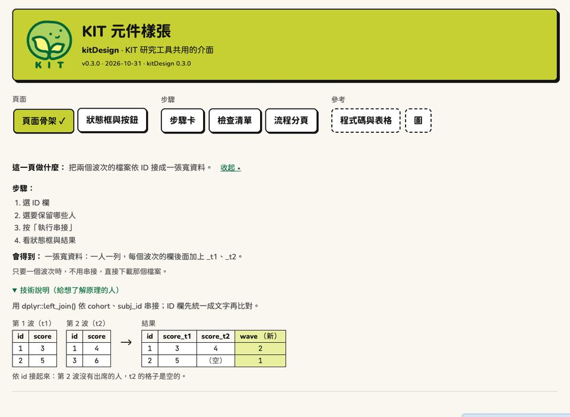

KIT 研究工具（kitJoin、kitsUI，以及之後的 KIT Shiny app）共用的介面層： 一個設定函式把主題、樣式、標誌、頁首放好，再用一組有說明的 kit_*() 元件組出頁面。 每個元件都照「KIT 設計語言」做：看得清楚、按得放心、結果先說。

- 主題：Bootswatch Brite（bslib 0.11.0 以上）＋ KIT 的顏色、圓體 Chiron GoRound TC、等寬 JetBrains Mono。
- 品牌：標誌與顏色不寫死。預設是 KIT；別的計畫用
kit_brand()換成自己的標誌與配色。 - 樣式：克制的 neo-brutalism（2px 黑框、硬陰影、平塗色塊配黑字），內文 17px、內容最寬 1140px。
- 元件：頁首、步驟分頁、頁面說明、按鈕、下載按鈕、狀態框、提示框、雲端版的橫幅與使用須知、細節列、用 R 怎麼做、步驟卡、檢查清單、還差什麼、下一步、圖解、資料表、圖（plotly 的樣子）。
- server 端的小工具：停用主要按鈕並寫還差什麼、執行完捲到狀態框、分頁打 ✓、通知、千分位、白話錯誤。
安裝
# install.packages("remotes")
remotes::install_github("jiewenTsai/kitDesign")只依賴 shiny、bslib（>= 0.11.0）、htmltools（和 R 內建的 grDevices、utils）。用 kit_plotly_style() 時另外要 plotly。
bslib 太舊（0.11.0 以前沒有 Brite 主題）時 kit_theme() 會停下來，說要裝新版。 安裝 app 時用 pak::pkg_install("<帳號>/<app>") 或 remotes::install_github("<帳號>/<app>", upgrade = "always")，太舊的套件會一起升級。
快速開始
最快：開一個新的 app 套件骨架（頁首、步驟分頁、一個照頁面骨架寫好的範例分頁、測試都有了）。
kitDesign::kit_new_app("~/kitScore", "KIT 計分工具", "臺灣幼兒發展調查資料庫")自己寫一頁：
library(shiny)
library(kitDesign)
ui <- kit_page(
"KIT ×× 工具", "臺灣幼兒發展調查資料庫",
version = "0.1.0", date = "2026-10-31", show_kitdesign = TRUE,
kit_tab_guide(
goal = "把兩個波次的檔案依 ID 接成一張寬資料。",
steps = c("選 ID 欄", "按「執行串接」", "看狀態框與結果"),
output = "一張寬資料：一人一列。"
),
selectInput("id_col", "ID 欄", c("（還沒選）" = "", "subj_id")),
kit_run_gate_ui("gate", "執行串接"), # 還差：…＋主要按鈕
uiOutput("status"),
kit_details_row(kit_code_panel_ui("code"))
)
server <- function(input, output, session) {
run <- kit_run_gate_server("gate", reactive(
if (input$id_col == "") "選 ID 欄"
))
status <- reactiveVal(kit_status())
observeEvent(run(), {
status(kit_done_status("串接完成：結果共 3,389 列。"))
kit_scroll_to("status") # 執行完捲到狀態框
}, ignoreInit = TRUE)
output$status <- renderUI(status()) # kit_status 物件直接畫
kit_code_panel_server("code", function() list(
tidy = "joined <- dplyr::left_join(t1, t2, by = \"subj_id\")"
))
}
shinyApp(ui, server)一步一步的說明：vignette("kitDesign")。看所有元件：kitDesign::kit_gallery()， 或網站上的元件一覽。
plotly 圖（例如 kits 的 plot()）最後交給 kit_plotly_style()：
p <- plot(item, type = "category") # kits 畫的 plotly 圖
p <- kit_chart_zh(kit_chart_categorical(p)) # kitsUI：換色、換中文（要在前面）
kit_plotly_style(p) # 最後：KIT 的字型、軸線、圖例、工具列換成別的品牌
不是 KIT 的計畫也可以用：換標誌與顏色，其他（字型、框、陰影、元件）照設計語言。 在 app 開始時設定一次，所有函式都用它：
options(kitDesign.brand = kit_brand(
"示範實驗室",
logo = "logo.svg", # 頁首的標誌（SVG 或 PNG）
mark = "mark.svg", # 瀏覽器分頁的小圖示（方形；沒有給時用 logo）
colors = list(accent = "#9cc0ff", primary = "#1f4fa3", page = "#f5f7fa")
))或只給一頁：kit_page(..., brand = kit_brand(...))。顏色的名稱（ink、page、card、 accent、accent_light、primary、primary_hover、success、warning、danger、info） 和 CSS 變數（--nb-*）的對照見 ?kit_brand。沒有給的照 KIT；kit_brand() 不給參數就是 KIT。 看換了以後的樣子：kit_gallery(brand = "demo")。
元件一覽
設定
| 函式 | 做什麼 |
|---|---|
kit_page() |
整頁：bslib::page_fluid(lang = "zh-Hant-TW")＋主題＋樣式＋頁首 |
kit_theme() |
bslib 主題（Bootswatch Brite＋KIT 顏色與字型） |
use_kit() |
樣式與小程式（htmltools dependency；自己組頁面時用） |
kit_header()、kit_app_meta()
|
頁首、版本行 |
kit_app_description() |
讀 app 的 DESCRIPTION 的 Version、Date |
kit_brand()、kit_current_brand()
|
品牌：標誌、分頁圖示、顏色（預設 KIT；options(kitDesign.brand = )） |
kit_logo_uri()、kit_colors()
|
KIT 標誌（data URI）、品牌色 |
kit_gallery() |
元件樣張 app（brand = "demo"：看別的品牌） |
kit_new_app() |
開一個新的 KIT app 套件骨架 |
kit_versions() |
kitDesign 與 app 的版本（回報問題用） |
模組（有狀態的元件，一頁一行）
| UI | server | 做什麼 | server 回傳 |
|---|---|---|---|
kit_step_tabs_ui() |
kit_step_tabs_server() |
步驟分頁（流程或分組）；做完 ✓、還不能做、要重新執行 |
selected()、select()、states()
|
kit_stepcards_ui() |
kit_stepcards_server() |
步驟卡：哪一步打開、「對，下一步」、「改」、摘要、檢查 |
current()、done()、open()、reset()
|
kit_run_gate_ui() |
kit_run_gate_server() |
主要按鈕＋「還差：…」 | 可以執行時按了幾次 |
kit_code_panel_ui() |
kit_code_panel_server() |
用 R 怎麼做（打開時才算） | 現在的 kit_code
|
分頁骨架
| UI | server | 做什麼 | server 回傳 |
|---|---|---|---|
kit_run_tab_ui(id, run_label, guide, ..., gate, result, downloads, details, code, next_step) |
kit_run_tab_server(input, output, session, run_label, run, done, ready, settings, stale_on, progress, error, guard, confirm, result_ui, details_ui, code) |
一頁一個主要按鈕的分頁：照頁面骨架排好；還差、設定摘要、執行（進度條）、狀態框、通知、捲到狀態框、【要重新執行】、結果的重點與細節、用 R 怎麼做 |
result、status、state、run(...)
|
不是 Shiny 模組：在分頁自己的 moduleServer() 裡呼叫，設定的 input 留在分頁的 namespace 裡。
值物件（直接放進頁面或 renderUI()）
| 函式 | class | 做什麼 |
|---|---|---|
kit_status()、kit_done_status()、kit_error_status()、kit_stale_status()
|
kit_status |
狀態框：【完成】【完成，但請注意】【停下來】【要重新執行】 |
kit_check()、kit_checklist()
|
kit_check、kit_checklist
|
檢查清單（! 要決定、✓ 沒問題、i 提醒） |
kit_code() |
kit_code |
一個版本的程式碼（每行最多 70 欄、附「複製」） |
建構時檢查內容（例如狀態只能是 idle／success／warning／error／stale）； 都有 htmltools::as.tags()、format()、print()。
導覽（低階）
| 函式 | 做什麼 |
|---|---|
kit_navgroups()、kit_navgroup()
|
分組、不編號的分頁列（搭配 tabsetPanel(type = "hidden")） |
kit_flow_tabs() |
有順序的流程分頁（① ② ③），不是流程一步的分頁放最右邊 |
kit_tab_states() |
從狀態框的狀態算出分頁的 ✓、灰色、要重新執行 |
kit_watch_tab_states()、kit_send_tab_states()
|
把分頁狀態送到瀏覽器 |
頁面元件
| 函式 | 做什麼 |
|---|---|
kit_tab_guide()、kit_steps()
|
這一頁做什麼（預設收起，「看步驟 ▸」） |
kit_diagram()、kit_dg_table()
|
圖解：處理前的小表 → 處理後的小表 |
kit_button()、kit_btn_class()
|
主要、小、危險按鈕 |
kit_callout() |
提示框（資訊／注意） |
kit_cloud_banner()、kit_cloud_footer()、kit_is_cloud()
|
雲端版：頁首下面的提醒橫幅、頁尾的使用須知、是不是雲端版 |
kit_download_button() |
下載按鈕：中文檔名在每個瀏覽器都存得對（測試用 kit_test_download()） |
kit_advanced() |
進階設定（收起） |
kit_settings_line() |
設定摘要（「本次：…」） |
kit_ready_line() |
還差：… |
kit_next_step()、kit_app_link()
|
下一步、連到別的 app |
kit_step_card()、kit_step_head()、kit_step_body()
|
步驟卡（現在、做完、還不能做） |
kit_problems() |
步驟卡裡的單一問題（「還差：…」） |
結果
| 函式 | 做什麼 |
|---|---|
kit_status_ui() |
狀態框的低階畫法（最多 3 點，其他「還有 N 點」；怎麼辦；原始訊息） |
kit_details_row()、kit_detail()
|
結果下面一排收起來的細節 |
kit_code_panel()、kit_code_blocks()、kit_render_code_panel()
|
用 R 怎麼做的低階函式 |
kit_code_wrap()、kit_code_cols()
|
程式碼換行成每行最多 70 欄；每行幾欄（中文字算 2 欄） |
kit_static_table()、kit_preview_table()、kit_table_scroll()
|
資料表、預覽表、左右捲的框 |
kit_rows_note()、kit_dims()、kit_num()
|
「共 3,418 列 × 25 欄，以下前 10 列。」、千分位 |
kit_chart_colors()、kit_chart_neutral()
|
圖的類別色（Okabe–Ito）與中性色 |
kit_chart_sequential() |
連續數值的色階（極淡萊姆 → 淡萊姆 → KIT 綠；0% 和沒有資料的白格分得開），熱圖用 |
kit_plotly_style() |
plotly 圖套上 KIT 的樣子：字型、軸線、格線、白底、靠左的粗體標題、圖例、色階、滑過的說明框、精簡的工具列（plotly 是 Suggests） |
kit_plotly_fonts() |
plotly 圖附上 app 的字型（下載的單一 HTML 檔用；kit_plotly_style() 預設已經附上） |
server 端
| 函式 | 做什麼 |
|---|---|
kit_run_gate()、kit_need_files()
|
主要按鈕還不能按時停用它，上面寫還差什麼（模組的低階版） |
kit_scroll_to() |
執行完把狀態框捲到畫面上方 |
kit_open_details() |
打開一個收合區塊 |
kit_unload_guard() |
有結果時，離開頁面前先問一次 |
kit_notify() |
通知（停下來紅色 10 秒，其他 6 秒） |
kit_abort()、kit_is_user_error()
|
給使用者看的白話錯誤 |
設計語言
brand/KIT設計語言.md 是每個元件的規格（用途、長相、規則、不要）； brand/_brand.yml 是顏色、字型等設計變數；brand/logo/ 是標誌檔。
版本與維護
- 語意化版本：patch＝修正、畫面和函式不變；minor＝新元件或選項；major＝改名、拿掉、看得到的設計改變。 發布步驟與檢查清單：
brand/版本與發布.md；每一版的改變：NEWS.md。 - app 固定用某一版：
Remotes: jiewenTsai/kitDesign@vX.Y.Z、Imports: kitDesign (>= X.Y.Z)。 - 頁首可以同時寫出兩個版本：
kit_page(..., package = "kitJoin", show_kitdesign = TRUE)→「kitJoin v0.6.0 · 2026-10-31 · kitDesign 0.5.0」。 - kitJoin、kitsUI 換成 kitDesign 時的名稱對照：
brand/遷移對照.md。
開發
- R 程式碼只能用 ASCII（
R CMD check的規定）。字串直接寫中文，改完在套件根目錄跑LC_ALL=en_US.UTF-8 Rscript tools/escape_non_ascii.R：中文換成\uXXXX，上面加一行「# 原文：…」註解。 - 樣式在
inst/www/：kit-base.css→kit-brite.css→kit-design.css（順序不能換）；小程式在inst/www/kit.js。 - 檢查：
LC_ALL=en_US.UTF-8 R CMD build . && LC_ALL=en_US.UTF-8 R CMD check --no-manual kitDesign_0.4.0.tar.gz； 畫面：LC_ALL=en_US.UTF-8 Rscript tools/check_gallery.R（1280 與 390 寬截圖，整頁不能左右捲；危險按鈕是鮭魚色）； 示範品牌：Rscript tools/check_gallery.R <資料夾> 7551 demo。 - GitHub Actions：
.github/workflows/R-CMD-check.yaml（push 與 pull request）；.github/workflows/pkgdown.yaml（網站，放到gh-pages分支）。 - 網站：
pkgdown::build_site()建到docs/（不進 git）；設定在_pkgdown.yml、pkgdown/extra.css， 網站才有的文章在vignettes/articles/（不會當成 vignette 打包）。